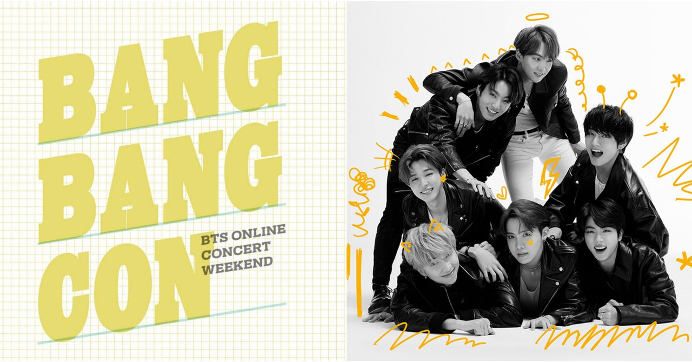

"Video call with my parents and friends"
Right now, i am still in Kuching and I live with my aunt for a while until the PKP done. So everyday I will video calling with my parents and most of the time im also video calling my friends.
"Watching BTS online concert"
 BangBang Con-BTSBangBang Con is a online concert which is BTS let their fans to listen their music and watching their performance. I've watch it to waste my time and it help me to calm for a while. Watching their performance really teach me a lot of things such as loving yourself, appreciate your friends, your parents and people that always support.
"learning new recipes"
I,ve downloaded tiktok, and in tiktok.. There are a lot of recipes that we can leran by watching their videos and it is interesting.